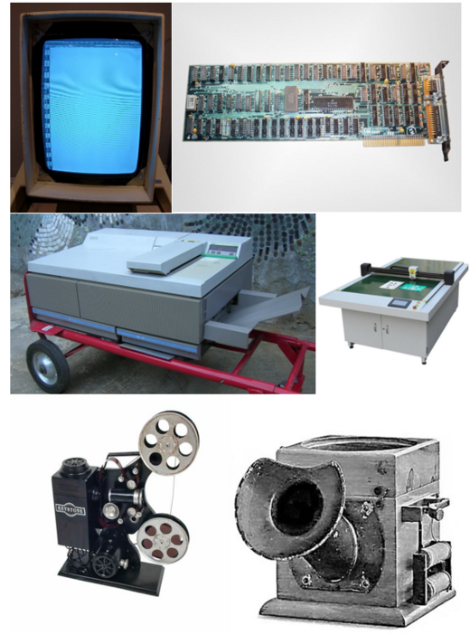
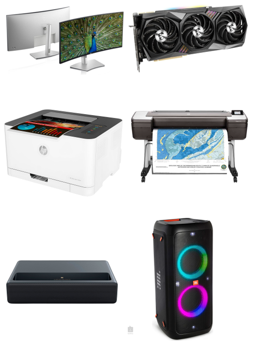

Bevezetés
A kimeneti perifériák a számítógépek adatkivitelére szolgáló külső egységek. A gép által végrehajtott feladatok eredményeit mutatják, vagyis a géptől a felhasználó felé közvetítenek információkat.
Felsorolás:
- Monitor
- Grafikus kártya
- Nyomtato
- Plotter(rajzgép)
- Projektor(vetito)
- Hangszóró
Múlt kimeneti perifériái
Jelen kimeneti perifériái
